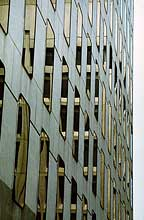
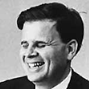
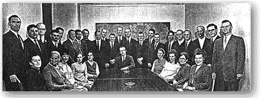
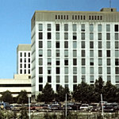
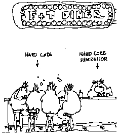

Loading

Thinking about the old days reminds me of Tech Square. I wonder how much the physical environment influenced what we built.
Counting undergraduate time I worked at  Tech Square for 18 years.
Project MAC's offices were at 545 Main Street, Cambridge, Mass,
in a gray 9-story concrete building in an industrial district behind MIT,
just across the tracks from a starch factory.
Tech Square for 18 years.
Project MAC's offices were at 545 Main Street, Cambridge, Mass,
in a gray 9-story concrete building in an industrial district behind MIT,
just across the tracks from a starch factory.
Project MAC used floors 5, 8, and 9 of the building for professor, staff, and graduate student offices, and computer rooms.
The computers were the main attraction; the Project MAC IBM 7094 and GE-645;
the AI lab PDP-6 and  PDP-10; the Dynamic Modeling group's PDP-10, several other DEC machines, and the ARPANet IMP.
The story was that the value of the computers in the building was more than the value of the real estate,
not even counting the computers of other tenants besides MAC in Tech Square.
The IBM Cambridge Scientific Center was on 4, the birthplace of
PDP-10; the Dynamic Modeling group's PDP-10, several other DEC machines, and the ARPANet IMP.
The story was that the value of the computers in the building was more than the value of the real estate,
not even counting the computers of other tenants besides MAC in Tech Square.
The IBM Cambridge Scientific Center was on 4, the birthplace of  CP/CMS and the 360/67.
The GE Multics team, the Cambridge Information Systems Laboratory (CISL), had offices on half of the seventh floor.
CP/CMS and the 360/67.
The GE Multics team, the Cambridge Information Systems Laboratory (CISL), had offices on half of the seventh floor.
Before the CIA office on the third floor had its typewriters stolen one night, the MAC building was open all the time, like a university building. In the evening, newsboys (Cambridge urchins) used to run through the halls at Tech Square shouting "Ecket" -- selling the Boston Evening Record. The building directory listed the CIA office as "R K Starling Associates." After the theft, there was a security guard in the lobby and you had to sign in and out (but nobody checked what name you wrote).
Each office floor had maybe 60 offices, singles and doubles, wrapped around the elevator core. Almost all the offices had windows: none opened. The air conditioning wasn't enough for the load of people and machines in the building on really hot summer days, and failed every year, forcing us to shut down the computers before they roasted themselves. Fluorescent lights, linoleum floors, hard walls, doors that locked; they were nice offices. There was a barbershop and vending machines in the basement, and a restaurant called Tech Square House on the first floor. The lobby of the building was paneled in beautiful rosewood; someday it'll be worth a fortune.
The 7094 and 645 machine room was half the 9th floor; down one hall was the Kludge Room with the ESL Display, and then the AI Lab at the other end of the floor. In 1964, there was a public terminal room on the 9th floor with IBM 1050s any MAC user could use, and this was where I was working when the news came that JFK was shot. (This room was next to the AI ping pong table: in 65 or 66 the AI group slogan was "Ping Pong by Christmas," because they planned to have the PDP-6 use the MIT arm and play ping pong. Tom Knight tells me the PDP-6 never did play Ping Pong.)
Computer terminals cost more than a new Buick in the sixties, so many programmers had no terminal in their offices; when they wanted to edit a file or debug, they found an idle terminal in a terminal room. Programming in public, helping and criticizing each other, and sharing questions and answers shaped our style of cooperation and problem solving. Model 35 Teletypes were common in 1964, but after Jerry Saltzer wrote the TYPSET and RUNOFF commands for CTSS, people began to use computers for documents as well as programs and wanted mixed case. Saltzer used an IBM 1050 for his thesis; then IBM 2741s became the most common terminal. The first devices Multics talked to were Teletype 37s, because their full-ASCII support matched the Multics character set. They also ran at a blazing 150 baud.

On the fifth floor, Ted Glaser's office was near mine;
he used a  PDP-8 connected to a Braille embosser from the MIT Sensory Aids Center.
Hank Magnuski and Fred Luconi worked on the hardware and software for this device.
PDP-8 connected to a Braille embosser from the MIT Sensory Aids Center.
Hank Magnuski and Fred Luconi worked on the hardware and software for this device.

GE CISL group photo, May or June 1968. Click on a face to identify.
About 1968 the Beta building was built across the courtyard at 575 Tech Square. A Honeywell lab, founded by Ugo Gagliardi and later led by J. W. Poduska after the merger, occupied the first floor of Beta for a while, then was replaced by a Harvard Trust branch. About 1970, CISL moved to the third floor of Beta and stayed there until it moved to Kendall Square in 1986. Computer Corporation of America had the CCA terabit store on the fifth floor of Beta; the MIT Political Science department's Cambridge Project was on the fifth floor too. The National Bureau of Economic Research, led by MIT political scientists, also had offices in 575.

Two other buildings in the Tech Square complex were Polaroid engineering, another 9-story building, and Polaroid headquarters, 3 stories. We used to see engineers come out of the engineering building with funny gadgets in their hands, snap a picture, and go back in. MIT's Charles Stark Draper Laboratories, a defense research lab, was built in the parking lot in the mid 70s. NASA had buildings down the street.
Next to the Beta building along Main Street there was a large housing project. In the 70s, groups from CISL and MAC used to walk through the projects to get sandwiches at a small grocery a block away. As firepower and drugs escalated, we went in larger groups and finally stopped.
Parking. There was no place to park in Cambridge, especially near MIT. So there were parking stickers, guards in little booths, meters, garages, sharp pronged things that let you out but not into the parking lot, gates with little cards to open them: all of these were of extreme importance.

cartoon by Angus Macdonald
Marvin Fox and Maynard Tishman, early 1970s. Click for a larger view.
In the 60s, we used to walk to Kendall Square to have lunch at the F&T. The round table in the front corner of this bar was often occupied by Prof. Warren McCullough, the neurobiologist, and a group of graduate students; the Multicians sat further back. A lot of the Multics file system and page control was designed at the F&T. When I went back in 1988, Kendall square was transformed and the F&T was gone, but Tech Square looked about the same.
CISL had one of the few Coke machines in Cambridge that had 12 oz bottles. The Coke man hated us, because it was a lot more work to load the machine, and because the bottle machines were rare and hard to find parts for when they broke down. But we were good customers, and particular about our Coke; it didn't taste as good from a can. When the Coke machine broke down, there were some members of the group who couldn't function. Finally we convinced the Coke man to put two machines side by side in the CISL coffee room, to increase the chances that one would be up. (An early form of fault tolerant computing.)
Take a look at a web version of the 1975  LCS Brochure, put online by MIT Prof.
LCS Brochure, put online by MIT Prof.  Peter Szolovits.
Peter Szolovits.
Tech Square was reconstructed in 2001. New buildings were built and 545 is now known as 200 Tech Square.
Posted 07/28/93, updated 08/01/93, 01/30/95, 02/05/95, 11/15/95, 8/8/01
thanks to JWG and Claude Carré for help with CISL names.